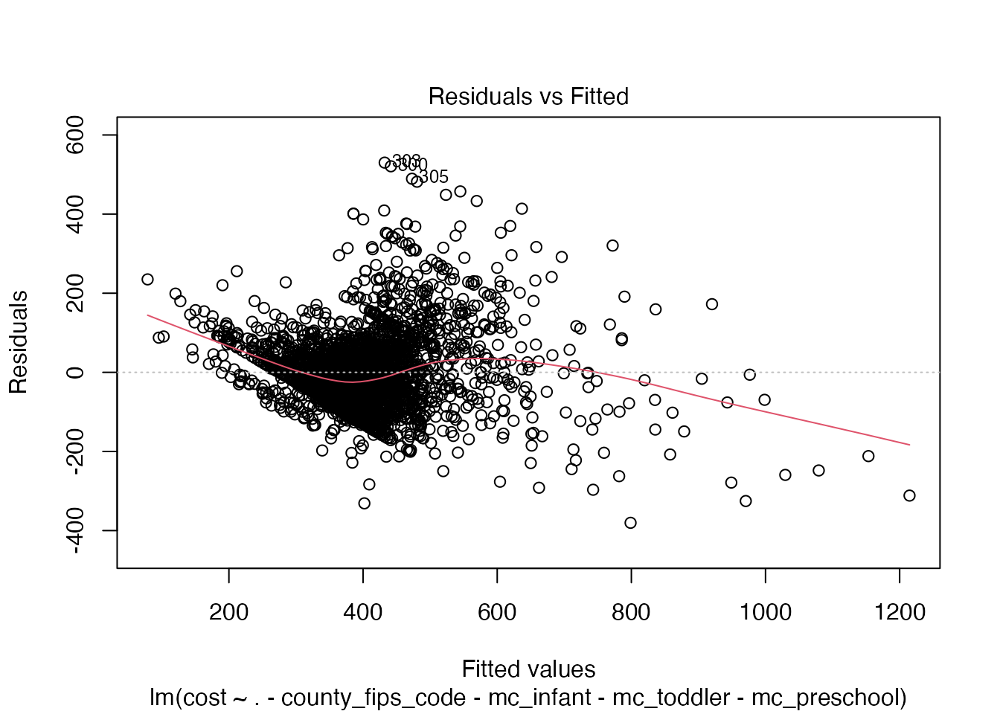

Datasets & Qestion
pick up the dataset
in this part, I’ll use the TidyTuesday
patient children cost datasets to conduct analysis.
- original data download link.
- data
dictionary
research question
question: How do demographic and socio-economic factors influence the median weekly cost of center-based childcare in different counties/states in America?
loading the data
# Get the Data
# Read in with tidytuesdayR package
# Install from CRAN via: install.packages("tidytuesdayR")
# This loads the readme and all the datasets for the week of interest
# Either ISO-8601 date or year/week works!
# tuesdata <- tidytuesdayR::tt_load('2023-05-09')
# tuesdata <- tidytuesdayR::tt_load(2023, week = 19)
# childcare_costs <- tuesdata$childcare_costs
# counties <- tuesdata$counties
# Or read in the data manually
childcare_costs <- readr::read_csv('https://raw.githubusercontent.com/rfordatascience/tidytuesday/master/data/2023/2023-05-09/childcare_costs.csv')## Rows: 34567 Columns: 61
## ── Column specification ────────────────────────────────────────────────────────
## Delimiter: ","
## dbl (61): county_fips_code, study_year, unr_16, funr_16, munr_16, unr_20to64...
##
## ℹ Use `spec()` to retrieve the full column specification for this data.
## ℹ Specify the column types or set `show_col_types = FALSE` to quiet this message.
counties <- readr::read_csv('https://raw.githubusercontent.com/rfordatascience/tidytuesday/master/data/2023/2023-05-09/counties.csv')## Rows: 3144 Columns: 4
## ── Column specification ────────────────────────────────────────────────────────
## Delimiter: ","
## chr (3): county_name, state_name, state_abbreviation
## dbl (1): county_fips_code
##
## ℹ Use `spec()` to retrieve the full column specification for this data.
## ℹ Specify the column types or set `show_col_types = FALSE` to quiet this message.- test if a directory named
dataexists locally.
# Check if the "data" directory exists
if (!dir.exists("data")) {
# If it doesn't exist, create it
dir.create("data")
}- Saves the data only once (not each time you knit/render the document).
file_path <- "data/childcare_costs.csv"
if (!file.exists(file_path)) {
write.csv(childcare_costs, file_path, row.names = FALSE)
}
counties_file_path <- "data/counties.csv"
if (!file.exists(counties_file_path)) {
write.csv(counties, counties_file_path, row.names = FALSE)
}- Read in the data locally each time you knit/render.
df <- read.csv(file_path)data exploration and preprocessing
##
## Attaching package: 'dplyr'## The following objects are masked from 'package:stats':
##
## filter, lag## The following objects are masked from 'package:base':
##
## intersect, setdiff, setequal, union## Linking to GEOS 3.11.0, GDAL 3.5.3, PROJ 9.1.0; sf_use_s2() is TRUE## To enable caching of data, set `options(tigris_use_cache = TRUE)`
## in your R script or .Rprofile.##
## Attaching package: 'purrr'## The following object is masked from 'package:maps':
##
## map
nrow(df)## [1] 34567
# head(df)
# colnames(df)here I selected the columns I’ll use later for my analysis.
# Selecting specific columns from the dataframe and performing group-wise summary
dft <- df %>%
# Select relevant columns for analysis
select(
# FIPS code identifying counties
'county_fips_code',
# Unemployment rates by gender for population aged 16 or older
'funr_16', # Female unemployment rate
'munr_16', # Male unemployment rate
# Labor force participation rates for women aged 20 to 64 with children in different age groups
'flfpr_20to64_under6', # With children under 6 years
'flfpr_20to64_6to17', # With children aged 6 to 17 years
# Poverty rate among families
'pr_f',
# Total population count
'total_pop',
# Population counts by race
'one_race_w', # White
'one_race_b', # Black
'one_race_i', # American Indian/Alaska Native
'one_race_a', # Asian
'one_race_h', # Hispanic/Latino
'one_race_other', # Other race
# Household counts with children, categorizing by parental work status
'h_6to17_both_work', # Both parents working
'h_6to17_fwork', # Only female parent working
'h_6to17_mwork', # Only male parent working
# Households with single mothers and children in different age groups
'h_under6_single_m', # With children under 6 years
'h_6to17_single_m', # With children aged 6 to 17 years
# Median weekly cost of center-based care for children of different age groups
'mc_infant', # Infant care
'mc_toddler', # Toddler care
'mc_preschool' # Preschool care
)
mean_dft <- dft %>% group_by(county_fips_code) %>% summarize(across(everything(), mean, na.rm = TRUE))## Warning: There was 1 warning in `summarize()`.
## ℹ In argument: `across(everything(), mean, na.rm = TRUE)`.
## ℹ In group 1: `county_fips_code = 1001`.
## Caused by warning:
## ! The `...` argument of `across()` is deprecated as of dplyr 1.1.0.
## Supply arguments directly to `.fns` through an anonymous function instead.
##
## # Previously
## across(a:b, mean, na.rm = TRUE)
##
## # Now
## across(a:b, \(x) mean(x, na.rm = TRUE))
sum_cost <- function(a, b, c) {
a + b + c
}
# total unemployment population:
Unem_pop <- function(a,b,c) {
(a+b)*c
}
test_mean_dft <- mean_dft %>% mutate(tot_unem_pop = pmap_dbl(list(funr_16, munr_16, total_pop), Unem_pop))
mean_dft <- mean_dft %>%
mutate(cost = pmap_dbl(list(mc_infant, mc_toddler, mc_preschool), sum_cost))
mean_dft <- arrange(mean_dft, county_fips_code)
head(mean_dft)## # A tibble: 6 × 22
## county_fips_code funr_16 munr_16 flfpr_20to64_under6 flfpr_20to64_6to17 pr_f
## <int> <dbl> <dbl> <dbl> <dbl> <dbl>
## 1 1001 6.92 6.59 66.7 76.7 8.85
## 2 1003 6.73 6.72 67.6 76.4 9.05
## 3 1005 12.1 12.7 69.8 73.1 20.2
## 4 1007 10.4 6.84 61.5 67.8 11.6
## 5 1009 7.17 7.18 63.8 66.1 10.8
## 6 1011 15.0 12.0 74.4 61.9 24.4
## # ℹ 16 more variables: total_pop <dbl>, one_race_w <dbl>, one_race_b <dbl>,
## # one_race_i <dbl>, one_race_a <dbl>, one_race_h <dbl>, one_race_other <dbl>,
## # h_6to17_both_work <dbl>, h_6to17_fwork <dbl>, h_6to17_mwork <dbl>,
## # h_under6_single_m <dbl>, h_6to17_single_m <dbl>, mc_infant <dbl>,
## # mc_toddler <dbl>, mc_preschool <dbl>, cost <dbl>Here performed a correlation analysis to explore the pairwise relationships between independent variables (demographic and socio-economic factors) and the dependent variable (cost of childcare).
## Loading required package: carData##
## Attaching package: 'car'## The following object is masked from 'package:purrr':
##
## some## The following object is masked from 'package:dplyr':
##
## recode## corrplot 0.92 loaded## county_fips_code funr_16 munr_16 flfpr_20to64_under6
## Min. : 1001 Min. : 0.000 Min. : 0.000 Min. :16.08
## 1st Qu.:18176 1st Qu.: 5.011 1st Qu.: 5.697 1st Qu.:63.57
## Median :29176 Median : 6.745 Median : 7.658 Median :69.54
## Mean :30381 Mean : 7.028 Mean : 7.859 Mean :68.83
## 3rd Qu.:45082 3rd Qu.: 8.697 3rd Qu.: 9.645 3rd Qu.:74.55
## Max. :56045 Max. :24.513 Max. :30.913 Max. :96.08
##
## flfpr_20to64_6to17 pr_f total_pop one_race_w
## Min. :14.89 Min. : 0.000 Min. : 77 Min. : 7.289
## 1st Qu.:74.72 1st Qu.: 7.842 1st Qu.: 10979 1st Qu.:77.123
## Median :79.44 Median :10.854 Median : 25736 Median :90.025
## Mean :78.83 Mean :11.738 Mean : 99096 Mean :83.630
## 3rd Qu.:83.86 3rd Qu.:14.406 3rd Qu.: 66666 3rd Qu.:95.555
## Max. :99.98 Max. :43.767 Max. :9924587 Max. :99.467
##
## one_race_b one_race_i one_race_a one_race_h
## Min. : 0.0000 Min. : 0.0000 Min. : 0.0000 Min. : 0.00000
## 1st Qu.: 0.5545 1st Qu.: 0.1909 1st Qu.: 0.2818 1st Qu.: 0.00000
## Median : 2.1136 Median : 0.3454 Median : 0.5182 Median : 0.01818
## Mean : 8.9703 Mean : 1.9002 Mean : 1.2164 Mean : 0.08219
## 3rd Qu.:10.2609 3rd Qu.: 0.7818 3rd Qu.: 1.1182 3rd Qu.: 0.06364
## Max. :86.1882 Max. :86.2755 Max. :43.4818 Max. :22.85545
##
## one_race_other h_6to17_both_work h_6to17_fwork h_6to17_mwork
## Min. : 0.0000 Min. : 0.0 Min. : 0.0 Min. : 0.00
## 1st Qu.: 0.3400 1st Qu.: 685.6 1st Qu.: 257.4 1st Qu.: 46.25
## Median : 0.8632 Median : 1660.1 Median : 611.9 Median : 117.09
## Mean : 2.1170 Mean : 6477.5 Mean : 2873.0 Mean : 389.93
## 3rd Qu.: 2.2818 3rd Qu.: 4448.4 3rd Qu.: 1776.4 3rd Qu.: 296.73
## Max. :36.7636 Max. :554732.8 Max. :352966.6 Max. :37233.82
##
## h_under6_single_m h_6to17_single_m mc_infant mc_toddler
## Min. : 0.0 Min. : 0.0 Min. : 27.73 Min. : 21.54
## 1st Qu.: 184.2 1st Qu.: 362.1 1st Qu.:109.00 1st Qu.:100.51
## Median : 495.1 Median : 904.4 Median :135.04 Median :120.81
## Mean : 1991.2 Mean : 3922.5 Mean :147.50 Mean :132.76
## 3rd Qu.: 1290.5 3rd Qu.: 2398.9 3rd Qu.:163.93 3rd Qu.:150.30
## Max. :209341.5 Max. :425656.9 Max. :409.88 Max. :377.82
## NA's :240 NA's :240
## mc_preschool cost
## Min. : 21.54 Min. : 70.81
## 1st Qu.: 96.25 1st Qu.: 309.13
## Median :115.60 Median : 371.41
## Mean :124.08 Mean : 404.34
## 3rd Qu.:138.65 3rd Qu.: 450.62
## Max. :327.80 Max. :1092.55
## NA's :240 NA's :240
high_cost <- filter(mean_dft, cost > 450)
data_for_correlation <- mean_dft[, -1] # Excludes the first column (county_fips_code)
correlation_matrix <- cor(data_for_correlation, use = "complete.obs") # Handling missing values
cost_correlations <- correlation_matrix["cost", ]
cost_correlations## funr_16 munr_16 flfpr_20to64_under6 flfpr_20to64_6to17
## -0.15317016 -0.09291397 0.13134007 0.17792157
## pr_f total_pop one_race_w one_race_b
## -0.44523957 0.35729097 0.05962818 -0.19444226
## one_race_i one_race_a one_race_h one_race_other
## -0.04967108 0.52733806 0.14589075 0.18792870
## h_6to17_both_work h_6to17_fwork h_6to17_mwork h_under6_single_m
## 0.39036964 0.31209180 0.35106121 0.27836428
## h_6to17_single_m mc_infant mc_toddler mc_preschool
## 0.29754599 0.99064522 0.99098875 0.99197233
## cost
## 1.00000000
# corrplot(correlation_matrix, method = "circle")
# Reshaping the correlation matrix into a long format
correlation_matrix_long <- melt(correlation_matrix)
ggplot(data = correlation_matrix_long, aes(x = Var1, y = Var2, fill = value)) +
geom_tile() +
scale_fill_gradient2(low = "blue", high = "red", mid = "white",
midpoint = 0, limit = c(-1,1), space = "Lab",
name="Correlation") +
theme_minimal() +
theme(axis.text.x = element_text(angle = 45, hjust = 1),
plot.title = element_text(size = 16, face = "bold"),
plot.subtitle = element_text(size = 12),
plot.caption = element_text(size = 8)) +
labs(
x = 'Variable 1',
y = 'Variable 2',
title = 'Correlation Matrix Using ggplot2',
subtitle = 'Visualization of Pairwise Correlation Coefficients',
caption = 'Source: Tidy Tuesday Dataset'
)
# use the function chosen from the beginr package in github
plt_test <- mean_dft %>% select(cost, funr_16, munr_16)
beginr::plotpairs(plt_test)## Warning in par(usr): argument 1 does not name a graphical parameter
## Warning in par(usr): argument 1 does not name a graphical parameter
## Warning in par(usr): argument 1 does not name a graphical parameter
beginr::plottype()
beginr::plothist(mean_dft$mc_toddler)VIF check
# Exclude non-independent variables
independent_data <- mean_dft %>%
select(-cost, -mc_infant, -mc_toddler, -mc_preschool)
model <- lm(funr_16 ~ ., data = independent_data) # Replace 'county_fips_code' with an appropriate variable if needed
vif_values <- vif(model)
print(vif_values)## county_fips_code munr_16 flfpr_20to64_under6 flfpr_20to64_6to17
## 1.055657 2.033534 1.540107 1.582684
## pr_f total_pop one_race_w one_race_b
## 2.972643 135.610125 133.532494 103.092204
## one_race_i one_race_a one_race_h one_race_other
## 32.226441 6.449915 2.022012 7.561551
## h_6to17_both_work h_6to17_fwork h_6to17_mwork h_under6_single_m
## 59.390005 28.079830 38.975255 249.359191
## h_6to17_single_m
## 368.354809plot the cost map for each couunty to compare.
# first check total cost
test <- mean_dft %>% select(county_fips_code, cost)
# Download county and state boundaries
counties <- counties(cb = TRUE) ## Retrieving data for the year 2021
states <- states(cb = TRUE)## Retrieving data for the year 2021
states$centroid <- st_centroid(states$geometry)
states$abbr <- state.abb[match(states$NAME, state.name)]
# Ensure FIPS is character type
counties$fips <- as.character(counties$GEOID)
test$county_fips_code <- as.character(test$county_fips_code)
map_data <- left_join(counties, test, by = c("fips" = "county_fips_code"))
# plot
ggplot() +
geom_sf(data = map_data, aes(fill = cost), color = NA) +
geom_sf(data = states, fill = NA, color = "black", size = 0.5) +
geom_text(data = states, aes(label = abbr, x = st_coordinates(centroid)[,1], y = st_coordinates(centroid)[,2]), check_overlap = TRUE, size = 3, color = "white") +
scale_fill_viridis_c(name = "Mean Cost", option = "C", direction = -1) +
labs(title = "Mean Value of Cost by County",
subtitle = "Comparison of Childcare Costs Across Different Counties",
caption = "Source: Childcare Cost Data | Map Data: US Census Bureau",
x = "Longitude",
y = "Latitude") +
coord_sf(xlim = c(-130, -60), ylim = c(25, 50), datum = NA) +
theme_minimal() +
theme(legend.position = "left",
plot.title = element_text(size = 14, face = "bold"),
plot.subtitle = element_text(size = 12),
plot.caption = element_text(size = 8))## Warning: Removed 6 rows containing missing values (`geom_text()`).
# fisrt check total cost
test_1 <- mean_dft %>% select(county_fips_code, mc_infant)
# Download county and state boundaries
counties <- counties(cb = TRUE) ## Retrieving data for the year 2021
states <- states(cb = TRUE)## Retrieving data for the year 2021
states$centroid <- st_centroid(states$geometry)
states$abbr <- state.abb[match(states$NAME, state.name)]
# Ensure FIPS is character type
counties$fips <- as.character(counties$GEOID)
test_1$county_fips_code <- as.character(test_1$county_fips_code)
map_data <- left_join(counties, test_1, by = c("fips" = "county_fips_code"))
# plot
ggplot() +
geom_sf(data = map_data, aes(fill = mc_infant), color = NA) +
geom_sf(data = states, fill = NA, color = "black", size = 0.5) +
geom_text(data = states, aes(label = abbr, x = st_coordinates(centroid)[,1], y = st_coordinates(centroid)[,2]), check_overlap = TRUE, size = 3, color = "white") +
scale_fill_viridis_c(name = "Mean Infant Cost", option = "C", direction = -1) +
labs(title = "Mean Value of Infant Cost by County",
subtitle = "Comparison of Childcare Costs Across Different Counties",
caption = "Source: Childcare Cost Data | Map Data: US Census Bureau",
x = "Longitude",
y = "Latitude") +
coord_sf(xlim = c(-130, -60), ylim = c(25, 50), datum = NA) +
theme_minimal() +
theme(legend.position = "right",
plot.title = element_text(size = 14, face = "bold"),
plot.subtitle = element_text(size = 12),
plot.caption = element_text(size = 8))## Warning: Removed 6 rows containing missing values (`geom_text()`).check the costs value distribution
##
## Attaching package: 'tidyr'## The following object is masked from 'package:reshape2':
##
## smiths
# Reshape the data to long format for faceting
long_data <- mean_dft %>%
select(cost, mc_infant) %>%
pivot_longer(cols = everything(), names_to = "variable", values_to = "value")
# Plot using ggplot2 with facet_wrap
ggplot(long_data, aes(x = value)) +
geom_histogram(bins = 30, fill = "blue", alpha = 0.7) +
facet_wrap(~variable, scales = "free") +
labs(title = "Distribution of Total Cost and Infant Cost",
subtitle = "Comparative Analysis of Cost Distributions",
caption = "Source: Tidy Tuesday dataset",
x = "Cost Value",
y = "Frequency of Occurrence") +
theme_minimal() +
theme(
plot.title = element_text(size = 16, face = "bold"),
plot.subtitle = element_text(size = 14),
plot.caption = element_text(size = 8),
axis.title.x = element_text(size = 12),
axis.title.y = element_text(size = 12)
)## Warning: Removed 480 rows containing non-finite values (`stat_bin()`).model and results
colnames(mean_dft)## [1] "county_fips_code" "funr_16" "munr_16"
## [4] "flfpr_20to64_under6" "flfpr_20to64_6to17" "pr_f"
## [7] "total_pop" "one_race_w" "one_race_b"
## [10] "one_race_i" "one_race_a" "one_race_h"
## [13] "one_race_other" "h_6to17_both_work" "h_6to17_fwork"
## [16] "h_6to17_mwork" "h_under6_single_m" "h_6to17_single_m"
## [19] "mc_infant" "mc_toddler" "mc_preschool"
## [22] "cost"
model <- lm(cost ~ . - county_fips_code - mc_infant - mc_toddler - mc_preschool, data = mean_dft)
summary(model)##
## Call:
## lm(formula = cost ~ . - county_fips_code - mc_infant - mc_toddler -
## mc_preschool, data = mean_dft)
##
## Residuals:
## Min 1Q Median 3Q Max
## -380.37 -58.25 -9.28 41.92 530.09
##
## Coefficients:
## Estimate Std. Error t value Pr(>|t|)
## (Intercept) 8.237e+02 1.247e+02 6.604 4.76e-11 ***
## funr_16 -2.471e+00 1.111e+00 -2.223 0.026278 *
## munr_16 1.244e+01 9.673e-01 12.863 < 2e-16 ***
## flfpr_20to64_under6 1.436e-01 2.461e-01 0.584 0.559460
## flfpr_20to64_6to17 5.772e-02 2.769e-01 0.208 0.834886
## pr_f -1.242e+01 5.766e-01 -21.539 < 2e-16 ***
## total_pop 3.271e-05 6.282e-05 0.521 0.602597
## one_race_w -4.153e+00 1.272e+00 -3.265 0.001107 **
## one_race_b -4.672e+00 1.275e+00 -3.664 0.000253 ***
## one_race_i -3.724e+00 1.406e+00 -2.648 0.008144 **
## one_race_a 1.443e+01 1.816e+00 7.945 2.75e-15 ***
## one_race_h -4.980e+01 1.001e+01 -4.975 6.91e-07 ***
## one_race_other 1.649e+00 1.461e+00 1.129 0.259201
## h_6to17_both_work 4.487e-03 6.842e-04 6.558 6.44e-11 ***
## h_6to17_fwork -8.801e-03 8.373e-04 -10.511 < 2e-16 ***
## h_6to17_mwork 9.923e-03 9.014e-03 1.101 0.271047
## h_under6_single_m -6.331e-03 3.909e-03 -1.619 0.105475
## h_6to17_single_m 3.300e-03 2.387e-03 1.382 0.166963
## ---
## Signif. codes: 0 '***' 0.001 '**' 0.01 '*' 0.05 '.' 0.1 ' ' 1
##
## Residual standard error: 94.83 on 2886 degrees of freedom
## (240 observations deleted due to missingness)
## Multiple R-squared: 0.5114, Adjusted R-squared: 0.5085
## F-statistic: 177.7 on 17 and 2886 DF, p-value: < 2.2e-16
# Residual plots
plot(model)

## funr_16 munr_16 flfpr_20to64_under6 flfpr_20to64_6to17
## 3.724431 3.476933 1.553709 1.607463
## pr_f total_pop one_race_w one_race_b
## 3.200913 137.971195 138.898555 116.580022
## one_race_i one_race_a one_race_h one_race_other
## 26.470602 5.863149 1.497708 7.483987
## h_6to17_both_work h_6to17_fwork h_6to17_mwork h_under6_single_m
## 60.239116 28.864265 39.313622 258.651302
## h_6to17_single_m
## 383.328391based on the results using linear regression, it can be seen that the childcare cost is related to the race, unemployment rates by gender, poverty rate among families, and parental work status. Based on the map plot, WA have higher costs compare to other states in US.
the function i used
select(), group_by(),
mutate(), group_by(),
filter(),arrange
different geom_*() functions from ggplot2:
geom_sf(),
geom_text(),geom_tile(),geom_histogram()